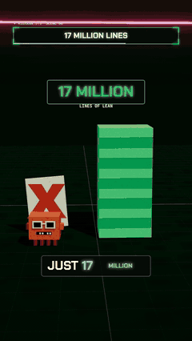
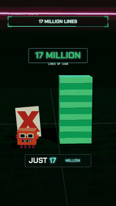

T01 Light leak glow transition
A soft coloured glow swells over the end of clip A, peaks on the cut, washes over clip B and is gone 5 frames later.
Best for: energy cut between b-roll shots, hook into the body, beat drops. Mood: energetic, warm, music video, travel. Length: 12 frames.
python3 effects/transitions.py leak A.mov --cut <s in A> B.mov --b-in <s in B> --look warm|prism -o out.mp4